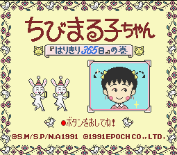
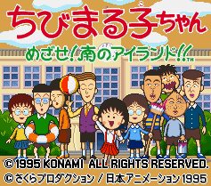

Chibi Maruko-chan - SNES Games
Chibi Marukochan Harikiri 365 Days

Company:
Epoch
Date Released:
13 Dec 1991
Price (in yen):
8800
Genre:
Board Game
Chibi Marukochan: Mizase! Minami no Island!

Company:
Konami
Date Released:
1995
Anime Video Game Resource Center © 1998 by
Luis A. Cruz